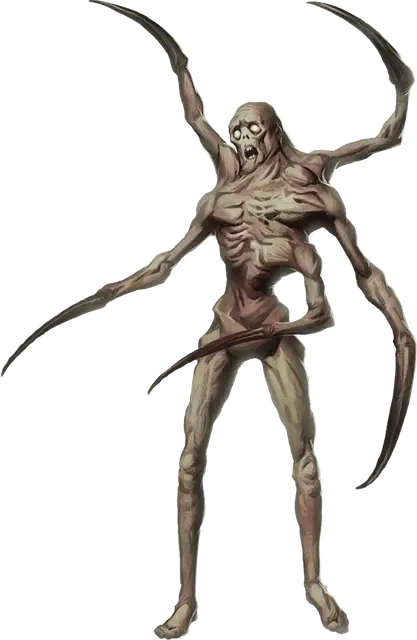

Заблудший угнетённый
Lost Sorrowsworn
Средний Монстр, обычно нейтрально-злой

Класс Доспеха 15 (природный доспех)
Хиты 78 (12к8 + 24)
Скорость 30 футов
| мод | спас | ||
|---|---|---|---|
| СИЛ | 17 | +3 | +3 |
| ЛОВ | 12 | +1 | +1 |
| ТЕЛ | 15 | +2 | +2 |
| мод | спас | ||
|---|---|---|---|
| ИНТ | 6 | −2 | −2 |
| МДР | 7 | −2 | −2 |
| ХАР | 5 | −3 | −3 |
Навыки Атлетика +6
Чувства тёмное зрение 60 футов, пассивное Восприятие 8
Языки Общий
Опасность 7 (2900 опыта)
Бонус мастерства +3
Среда обитания Арктика, Болото, Город, Горы, Лес, Подземье, Пустыня
Особенности
Сопротивление. дробящему, колющему и рубящему урону, пока находится в области тусклого света или тьмы.
Действия
Мультиатака. Заблудший совершает две атаки Рукой с шипами.
Рука с шипами. Рукопашная атака оружием: +6 к попаданию, досягаемость 5 футов, одна цель. Попадание: 14 (2к10 + 3) колющего урона.
Объятия (перезарядка 4–6). Рукопашная атака оружием: +6 к попаданию, досягаемость 5 футов, одна цель. Попадание: 25 (4к10 + 3) колющего урона и цель становится схваченной (Сл высвобождения 14), если она Среднего размера или меньше. До завершения захвата цель испугана, и получает 27 (6к8) урона психической энергией в конце каждого своего хода. Угнетённый может держать в объятиях только одну цель за раз.
Реакции
Сжимающие объятия. Если угнетённый получает урон в то время, как схватил существо, то существо схваченное Объятием получает 18 (4к8) урона психической энергией.
Описание
Царство Теней ведёт странников по кругу до той поры, пока они окончательно не заблудятся в однообразном ландшафте. Заблудшие угнетённые , которых часто называют Заблудшими, олицетворяют тревогу и страх, испытываемые людьми, когда они не могут найти верный путь. Эти угнетённые выглядят отчаянными и беспокойными.
Заблудшие угнетённые пытаются обнять любое существо, которое смогут догнать, пытаясь найти облегчение. Помимо ужасающих объятий с таким чудовищем, жертва испытывает поток страха и паники от того, что её мозг сжимается под яростью этого нападения. Чем усерднее союзники жертвы сражаются с угнетённым, тем жертве хуже становится.
Угнетённый
Повсеместная тоска Царства Теней порой порождает странные воплощения мрачной сущности плана. Угнетённые воплощают формы мучений, что свойственны в этой тёмной местности, а их внешность наводит ужас на тех, кто встретит их на своём пути. Каждый угнетённый олицетворяет различные проявления отчаяния, либо страдания.